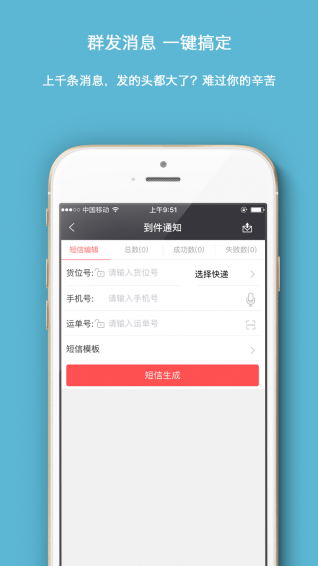
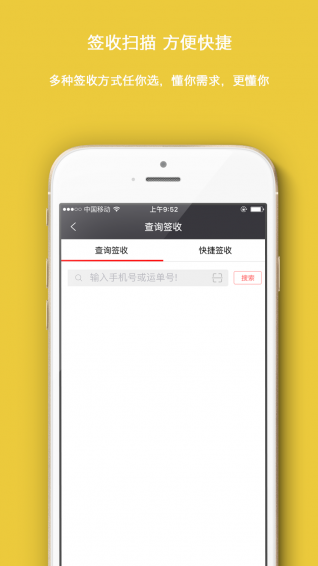

最便捷的校园快递平台—爱学派短信版app
爱学派短信版是一款专注于为快递公司提供校园快递服务的app，它由到件通知、签收扫描、查询统计三个核心功能组成，到件通知可以实现上千条信息一键群发，几秒钟即可搞定，签收扫描可以实现签收透明，流转信息全程可跟踪，查询统计可以实现高效的数据统计、分析和管理，随时查询，告别错发、漏发。爱学派短信版app目前已经开发了Android版本和iPhone版本，满足用户需求的同时，更为用户提供更方便的选择。
校园快递痛点带动app上线
校园快递一直以来都是各物流公司和学生备受困扰的难题，物流公司在派发校园快递时，一直受到时间和空间上的限制，不仅增加了成本，同时投诉率也是居高不下，而学生对于取件来说，也是十分不便，只能在固定的校门口或者其他校园周边区域收取快递，如何帮助快递公司解决难题，同时又能为学生带来便利，这成为了爱学派短信版app诞生的初衷。
 聚合高品质合作资源
爱学派的前身是一家物流公司，通过智能终端的研发和一站式快递业务管理系统，在物流领域内积累了良好的口碑和资源，已经和主流物流公司及多家高校取得了战略合作，通过在校内建设标准化门店和货源站点合作的方式，来打通上下游，解决用户需求。目前已经和顺丰、韵达、天天、申通、圆通、百世汇通、全峰等众多物流公司达成了合作。在复旦大学、电机学院、华东理工大学建立了自己的门店，并拥有多家加盟合作站点，上海、北京高校均有覆盖。
爱学派短信版app上线短短半个月以来已经迅速积累了11万用户，获得多家合作物流公司好评，简洁的页面、实用的功能、为用户带来了更好的体验